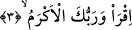

müşrikleri söz konusu gerçeği itiraf etmek ve kabul etmek mecburiyetinde bıraktı.
Çünkü Allah Teâlâ peygamberine onlara şöyle söylemesini emretti: Onlar öyle
kimselerdir ki bir kan pıhtısından yaratılmışlardır, bunu inkâr etmeleri mümkün değildir.
Bunun ardından Allah peygamberine kendilerine şunu söylemesini emretti: Her fiilin
mutlaka bir fâili vardır. Şu halde müşriklerin bu fiili yâni yaratma fiilini putlara
vermeleri mümkün değildir. Çünkü müşrikler biliyorlar ki o putları kendi elleriyle
yontmuşlardır. İşte bu aşağıdan yukarıya doğru çıkış ve delillerin sıralanışı sâyesinde
müşrikler şu gerçeği itiraf etmek zorunda kaldılar. Övgüye asıl lâyık olan ellerinizdeki
o putlar değil benim. Çünkü ilah olmanın birinci şartı “yaratma”dır. Hiçbir şey
yaratamayan, nasıl olur da kendisine ibâdete lâyık bir ilah olabilir?
Aynı bu metodun bir uygulamasını İmam-ı Azam Ebû Hanife’de görüyoruz. Rivâyet
edildiğine göre İmam Ebû Hanife öğrencisi İmam Züfer’i kendi mezhebini anlatmak
üzere Basra’ya gönderir. İmam Züfer Basralıların yanına vardığında Ebû Hanife’den
söz eder ancak Basralılar onu konuşturmazlar ve söylemiş olduğu şeylere iltifat
etmezler. Züfer hocası Ebû Hanife’ye geri döner ve ona olup bitenleri haber verir. Ebû
Hanife der ki: “Sen tebliğ metodunu bilmiyorsun. Şimdi Basra’lılara geri dön, onlara
herhangi bir fıkhi meselede imamlarının görüşlerinden söz et, sonra bu görüşlerin zayıf
olduğu noktaları beyân et. Ardından bu konuda bir başka görüş daha vardır de ve benim
görüşümden ve hüccetimden söz et. Benim görüş ve hüccetim onlar tarafından
benimsendiğinde onlara de ki: Bu Ebû Hanife’nin görüşüdür. İşte o zaman onlar seni
hüsn-i kabul ile karşılayacaklar ve reddetmeyeceklerdir.”
3. Oku! Rabbin, en büyük kerem sâhibidir.
“Oku!” yâni; sana emredileni yap. Okuma emrinin tekrarlanması, yukarda verilen
emre uyulmayı pekiştirmek ve daha sonra gelecek ifâdelere bir hazırlık yapmak içindir.
“Rabbin en büyük kerem sâhibidir.” Bu cümle bir başlangıç cümlesidir. Bundan
dolayı kırâat âlimi İmam Secavendi, bundan önceki “halak” âyetinin başında vakıf
yapmak câizdir, işâretini koymuştur. Bu ifâde aynı zamanda Peygamber Efendimiz’in
(s.a.) “Ben okuma bilmem” [166] şeklinde ileri sürmüş olduğu mazeretini ortadan
kaldırmak için sevkedilmiştir. Peygamber Efendimiz (s.a.) bu ifâdesiyle okuma işinin
yazma ve okuması olan kişilere has olduğunu kasdetmiştir ve devamla, “ben ümmiyim
(okuması yazması olmayan bir kimseyim)” demiştir. Buna karşılık kendisine “sana
kendi adıyla okumayı emreden Rabbin sonsuz kerem sâhibidir.” Yani onun keremi her
türlü kerim olan kimsenin daha üzerindedir. O sana herhangi bir amaca bağlı olmaksızın
nimet verecektir. Bunu verirken hiçbir övgü veya karşılık talep etmediği gibi herhangi
bir kınanmadan kurtulmayı da amaçlamamaktadır. Öte yandan ne kadar kerim ve cömert